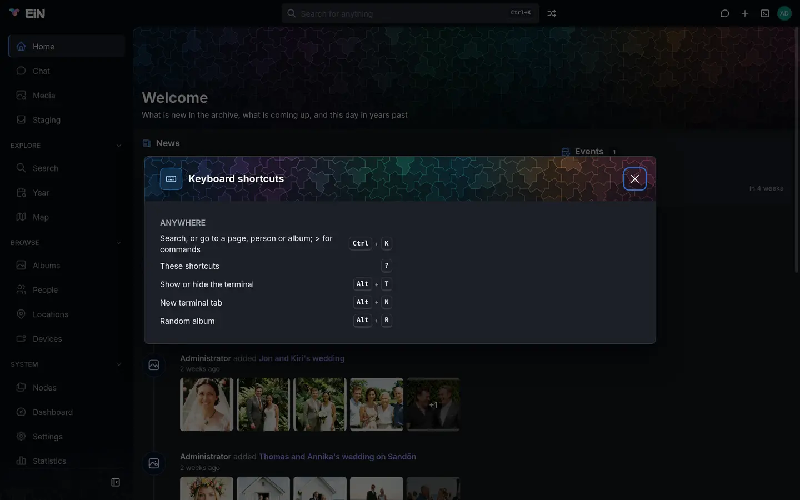

Every key EiN's web interface knows, by the part of the screen it works in. Each section links the page that explains that part in full; this page is for looking a key up.
See the keys where you are
Press ? anywhere outside a text field, or choose Shortcuts in the account menu. The Keyboard shortcuts dialog opens, listing the keys that work anywhere under Anywhere, and a group for each part of the screen that has keys of its own while that part is on screen: Pictures for a grid of pictures, Lightbox and Video for the viewer, Nodes, Staging and Memories. Press ? again or Esc to close it.


Some pages also show their keys at the foot of the page while you work, such as the Sort tab in staging; each key there is a button too.
How to read the keys on this page:
- Ctrl in a shortcut marked "(⌘ on a Mac)" is ⌘ on a Mac. The Keyboard shortcuts dialog shows the key your computer has.
- Alt is ⌥ on a Mac. The terminal's command line and the editor in the terminal use Ctrl on a Mac too, never ⌘.
- A letter key works without Shift unless the table says Shift.
- Keys typed into a text field are the field's. A page's single-letter keys, ? and the top bar's keys do nothing while you type in a box; Ctrl+K and the terminal's Alt keys work there too.
Anywhere
| Keys | What they do |
|---|---|
| Ctrl+K (⌘+K on a Mac) | Opens the finder: search, or go to a page, person or album; type > for commands. In its dialog form, pressed again, closes it. |
| ? | Opens or closes the Keyboard shortcuts dialog. |
| Alt+T | Shows or hides the terminal. |
| Alt+N | Adds a terminal tab. |
| Alt+R | Opens an album at random (Random album, with the Archive module). |
| Esc | Closes a dialog, or a page shown full screen, such as the viewer. |
Where a dialog or the viewer covers the search box, Ctrl+K opens the finder as a dialog of its own. Finding your way around shows the dialog, and Search and the finder the finder.
Keys for top-bar buttons
A top-bar button or a row of one of its menus can have a key, from a module or from your own navigation file. Alt+R for Random album is the only one EiN ships with. Each such key is listed under Anywhere in the Keyboard shortcuts dialog and shown in the button's tooltip, such as Random album (Alt+R). Your sidebar and top bar shows how to give an entry a key, change one, or take one away.
These keys are EiN's own and no top-bar entry can take them: Ctrl+K, ?, and Alt with T, N, M, W, ←, →, ↑ or ↓.
The finder and search boxes
In the finder (Search and the finder):
| Keys | What they do |
|---|---|
| ↑ ↓ | Light the row above or below. |
| Enter | Opens the lit row. With words typed, the first row, the search, is lit from the start. |
| Esc | Closes the list. |
In the search box of the Search and Media pages:
| Keys | What they do |
|---|---|
| Enter | Runs the search. |
↑ ↓ in the @ list |
Light a person, place, album or other thing to pick. |
| Enter or Tab in the list | Picks the lit row, which becomes a chip. |
| Esc in the list | Closes the list without picking. |
Pictures in a grid
Wherever pictures stand in a grid: an album, Media, Year, a person's pictures, search results. Albums describes selecting in full.
| Keys | What they do |
|---|---|
| Shift+click | Selects everything from the last picture picked to this one. |
| Ctrl+click (⌘+click on a Mac) | Adds a picture to the selection, or takes it out. |
| Ctrl+A (⌘+A on a Mac) | Selects every picture the page has loaded. |
| Esc | Clears the selection. With the viewer open, closes the viewer instead. |
| Enter or Space | Opens the picture that has the keyboard's focus. |
The time scrubber at the right of a long list (Scroll through time), on the albums page, in a media timeline and in staging, takes keys once you move to it with Tab: ↑ and ↓ step to the time before or after, Home and End go to the first and the last.
The viewer
While a photo, video or recording is open. Viewing photos, videos and recordings explains each.
| Keys | What they do |
|---|---|
| ← / → | Previous / next file, also during a slideshow. |
| i | Shows or hides the details panel. Not for a visitor who came by a share link. |
| f | Shows or hides the face boxes with their names. |
| t | Shows or hides the text in the picture, when it has some. |
| s | Adds the file to your favourites, or takes it out. |
| + or = | Zooms in a step (photos only). |
| - | Zooms out a step. |
| 0 | Fits the whole picture again. |
| Esc | Closes what lies over the picture first: the enlarged map, the text dialog, drawing a face box. Then stops a slideshow. Then closes the viewer. |
In the Who is this? box of an unnamed face, Enter names it. In the Text in the picture dialog, Ctrl+Enter (⌘+Enter on a Mac) saves. While a dialog lies over the viewer, the viewer's keys rest.
Videos and recordings
| Keys | What they do |
|---|---|
| Space or k | Plays or pauses (videos and recordings). |
| j / l | Back / forward 10 seconds (videos). |
| Shift+← / Shift+→ | Previous / next chapter, when the video has chapters. |
| m | Mutes or unmutes. |
| c | Turns subtitles on or off, when the video has a transcript. |
| < / > | Slower / faster. |
| p | Turns picture-in-picture on or off, where the browser has it. |
Move to the timeline, or a recording's waveform, with Tab to use these:
| Keys | What they do |
|---|---|
| ← ↓ / → ↑ | Back / forward 5 seconds. |
| Page Down / Page Up | Previous / next chapter, or a tenth of the file back / forward without chapters. |
| Home / End | The start / the end. |
On a video's volume slider, after Tab: ← ↓ and → ↑ change the volume by 5 percent, Page Down and Page Up by 20 percent, Home silences it and End turns it full up. A click on the timeline or the slider leaves the keyboard where it was, so ← and → still step between files.
The memories story
On Home, while On this day plays as a story (Home, memories and statistics):
| Keys | What they do |
|---|---|
| → | Next picture; after a year's last, the next year; after the last, closes. |
| ← | Previous picture. |
| Space | Pauses or plays. |
| Esc | Closes the story. |
People
People and faces explains each place.
| Where | Keys | What they do |
|---|---|---|
| Unidentified people | Ctrl+A (⌘+A on a Mac) | Ticks every loaded card. |
| Esc | Clears what is ticked. | |
| Reviewing an unidentified person | Ctrl+A (⌘+A on a Mac) | Picks every face and recording shown. |
| Shift+click | Picks a range. | |
| Esc | Closes an open photo first, then clears what is picked, then closes the review. | |
| Enter in the name box | Names the person. | |
| Split a person | Esc | Closes an open photo first, then the dialog. |
| A person's faces | The keys of pictures in a grid. |
Staging: the Sort tab
On a computer, the line at the foot of the stream shows the keys for where you are; hide folds it to a Keys chip. The keys do nothing while you type in a field or a dialog is open, and there are none on a phone. Sorting in staging explains what each does to a group.
On a group:
| Keys | What they do |
|---|---|
| J / K | Next / previous group |
| Shift+J / Shift+K, or Shift+↓ / Shift+↑ | Select on to the next / previous group |
| Enter | The proposal |
| N | New album from the group |
| P | New private album |
| A | Add to album… |
| B | Into the target, or Choose a target… when there is none |
| Shift+B | Choose the target |
| 1 2 3 | Into that candidate album |
| , / . | Highlight the candidate above / below |
| R | Not the highlighted candidate |
| C | Compare with the highlighted album, or narrow the column again |
| X | Discard |
| L | Later, or back to its lane |
| Z | Undo |
| E | Rename |
| T | Set the time of every picture, or of the selected ones |
| M / Shift+M | Merge into the group above / merge the group below in |
| [ / ] | Previous / next day or month of the group |
| ← → ↑ ↓ | Step through the pictures |
| O | Open the first picture |
On a picture (after an arrow key), on a day or month (after [ or ]), or with pictures selected:
| Keys | What they do |
|---|---|
| Space | Select the picture, or the day's pictures |
| O | Open the picture |
| S | Split the group before them; in a lane, make them a new group |
| < / > | Move them to the group above / below |
| G | Move them to a group… |
| Enter N P A B X | Act on the day or the selected pictures only |
| Esc | Back to the group, or clear the selection |
With a selection that reaches past the open group, Enter asks to accept the proposals of every group in it, N, P, A, B and X act on the whole selection, L puts the groups aside, and Esc clears it. <, >, [ and ] work on any keyboard layout, also where you type them with AltGr or Option.
With a mouse, drag across the stream to select the pictures and groups the box touches. Esc while dragging drops the box and puts the selection back as it was.
In the dialogs these keys open:
- Add to an album and Choose the target: with nothing typed, 1, 2 and so on pick the suggested album of that number.
- Move to a group: ↑ and ↓ light a group, Enter takes it.
- Renaming a group: Enter keeps the name, Esc gives it up.
Staging: duplicates
On the Duplicates tab and in its compare dialog (Duplicates):
| Where | Keys | What they do |
|---|---|---|
| Duplicates tab | J / K | Mark the next / previous set |
| Enter | Remove the marked set's copies | |
| C | Compare the marked set | |
| Z | Undo the last removal of this visit | |
| Comparing a set | ← / → | Move between the files |
| K | Keep the file in focus instead (staged files only) | |
| Enter | Remove the others | |
| X | Not duplicates (look-alikes only) | |
| Esc | Close without changing anything |
The Nodes explorer
While a folder listing of the Nodes explorer has the keyboard. The tree says what the nodes are.
| Keys | What they do |
|---|---|
| ↑ ↓ | Move the selection to the row above or below. |
| Shift+↑ Shift+↓ | Extend the selection. |
| Ctrl+↑ Ctrl+↓ | Move without selecting, to pick rows one by one. |
| → / ← | Open / close the row's folder in place. In the icons view the arrows move by the tiles on screen instead. |
| Space | Opens or closes the row's folder in place. |
| Enter | Go into the row. |
| Alt+Enter | Properties |
| Backspace | Up a level. |
| F2 | Rename. Enter keeps the new name, Esc gives it up. |
| Delete | Delete, after asking. Only where you may write. |
| F5 | Reload the listing. |
| Ctrl+H (⌘+H on a Mac) | Show or hide names that start with a dot. |
| Ctrl+A (⌘+A on a Mac) | Select every row shown, open folders included. |
| Ctrl+C (⌘+C on a Mac) | Copy. |
| Ctrl+X (⌘+X on a Mac) | Cut. Only where you may write. |
| Ctrl+V (⌘+V on a Mac) | Paste into the folder shown. Only where you may write. |
| Tab | With two panes, moves the keyboard to the other pane. |
In the address bar above a listing, Enter goes to the path typed and Esc puts back the path you were at.
The explorer's code editor saves with Ctrl+S (⌘+S on a Mac); Esc closes it only when nothing is unsaved. The editor covers it.
The trash
On the Trash page (Your profile, favourites and trash):
| Keys | What they do |
|---|---|
| ↑ ↓ | Move the selection. |
| Ctrl+click (⌘+click on a Mac) | Add a row to the selection. |
| Shift+click | Select a range. |
| Enter | Opens or closes a row that holds several things. |
| Delete | Delete for good, after asking. |
| F5 | Reload the list. |
The assistant
In the chat box (Chatting with the assistant), Enter sends the question and Shift+Enter starts a new line.
The side drawer the chat opens in can be made wider or narrower from the keyboard: move to its edge (Resize side panel) with Tab, then ← makes it 20 pixels wider and → 20 pixels narrower.
The terminal
The terminal's own keys work whether you are typing in it or not, with Alt alone, without Ctrl, Shift or ⌘. The terminal explains them.
| Keys | What they do |
|---|---|
| Alt+T | Show or hide the terminal |
| Alt+N | New tab |
| Alt+W | Close the tab you are typing in; never the last one |
| Alt+M | Fill the window, or go back to half of it |
| Alt+← / Alt+→ | Previous / next tab |
| Alt+↑ / Alt+↓ | A tenth of the window shorter / taller |
The command line is edited with bash's keys: Tab completes, ↑ and ↓ walk your history, Ctrl+R searches it (and does not reload the page; F5 does), Ctrl+C stops a command and Ctrl+D on an empty line ends the shell. Edit the command line has the full list. Ctrl+Z does not pause a command.
In an ssh session to another machine, ~ then . at the start of a line cuts
the connection; see Reaching other machines.
The editor in the terminal
edit opens a file in the terminal. Its keys are Ctrl on a Mac too.
The editor has every key.
| Keys | What they do |
|---|---|
| Ctrl+S or Ctrl+O | Save |
| Ctrl+Q or Ctrl+X | Leave; asks first if anything is unsaved |
| Ctrl+F | Find |
| Ctrl+G | Go to a line, or line:column |
| Ctrl+Z / Ctrl+Y | Undo / redo |
| Ctrl+K / Ctrl+U | Cut the line / paste what was cut |
| Esc or Ctrl+C | Cancel a question |
When a key does nothing
- The focus is in a text field. Click an empty part of the page, or press Esc in a search box to leave it, and press the key again.
- The key belongs to something else on screen. A dialog over the page takes the keyboard: the viewer's keys rest while a dialog lies over it, and staging's keys rest while a dialog is open. Press ? to see which groups are active.
- The browser or the computer keeps the key. Some browsers keep Ctrl+W, Ctrl+Q or Ctrl+S for themselves; the editor in the terminal also takes Ctrl+O and Ctrl+X.
- A top-bar key you set is missing. A key two entries ask for goes to the first in the top bar's order, and EiN's own keys are never given away. Your sidebar and top bar helps find out why.
- On a phone or tablet there is no keyboard to press; staging's keys and the others need a computer. EiN on a phone covers the gestures instead.